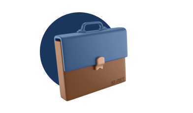
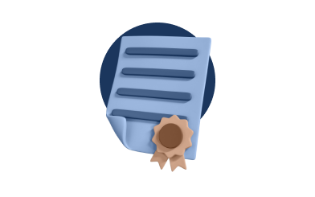
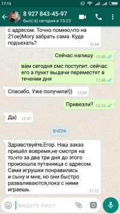
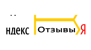

Банкротство физических и юридических лиц
Добьемся законного списания долгов
Добьемся законного списания долгов
Новострой-Эксперт.
Оплата по результату
Оплата по результату
О компании
Экспертно-юридическая компания «ЮрЭксперт» основана на принципах профессионализма, ответственности и лояльности. Мы стремимся стать надежным партнером для всех наших клиентов и обеспечить им высококачественные юридические услуги.
Мы гордимся своей командой квалифицированных юристов, которые имеют многолетний опыт работы в различных областях юриспруденции.
Мы гордимся своей командой квалифицированных юристов, которые имеют многолетний опыт работы в различных областях юриспруденции.

Более 10 лет практики
Мы работаем на рынке юридических услуг более 10 лет и за это время зарекомендовали себя как надежный партнер для наших клиентов.
Более 1500 выигранных дел
Мы гарантируем результаты - наша команда юристов имеет опыт решения более 1500 дел и знает, как достигнуть успеха в ведении дел.

Наши гарантии
Мы гарантируем полное соответствие наших услуг законодательству РФ и международным стандартам. Соблюдение всех сроков и условий договора.
Услуги
Юридические услуги нашей компании включают в себя широкий спектр консультаций и сопровождений по различным вопросам права, в том числе семейному, налоговому, корпоративному, уголовному, трудовому и другим видам правовых отношений.
Мы готовы оказать экспертную юридическую помощь нашим клиентам в решении разнообразных правовых вопросов и проблем.
Мы готовы оказать экспертную юридическую помощь нашим клиентам в решении разнообразных правовых вопросов и проблем.
Банкротство
Трудовые споры
Земляные спорты
Административное право
Семейные споры
Жилищные споры
Банковские споры
Авторское право
Наследственные споры
Страховые споры
Защита прав потребителей
Миграционное право
Наша команда
Мы гордимся тем, что наша команда состоит только из экспертов в своих областях, что обеспечивает нашим клиентам высокий уровень квалификации и компетентности. А также постоянно обновляем наши знания и следим за изменениями в законодательстве, чтобы всегда быть в курсе последних новостей и требований.
Евчатов Виктор Геннадьевич
15 лет практики
Управляющий партнёр компании
Козин Евгений Александрович
10 лет практики
Управляющий партнёр компании
Иванова Надежда Николаевна
13 лет практики
Руководитель юридческого отдела
Савочкина Светлана Игоревна
5 лет практики
Интернет-маркетолог, SMM специалист
Судебная практика
Наша фирма ориентирована на достижение конечных целей наших клиентов, и мы посвящаем все свои усилия для того, чтобы добиться максимального успеха в их делах. Мы гордимся нашими победами в сложных судебных делах и соглашениях.
20.10.2022
Дело №А76-3233/2022
Иванова Анастасия Сергеевна
192 718 ₽
Списан долг
Посмотреть судебное дело
25.08.2022
Дело №А76-18707/2021
Курапов Тимофей Николаевич
681 229,94 ₽
Списан долг
Посмотреть судебное дело
16.02.2023
Дело №А76-19539/2022
Максимовский Сергей Владимирович
719 803,80 ₽
Списан долг
Посмотреть судебное дело
11.04.2022
Дело №А76-25704/2021
Ишмухаметов Денис Дамирович
216 251,36 ₽
Списан долг
Посмотреть судебное дело
11.05.2022
Дело №А76-32846/2021
Грудина Галина Геннадьевна
392 041,34 ₽
Списан долг
Посмотреть судебное дело
17.11.2022
Дело №А76-33677/2021
Ефремофф Наталья Александровна
224 294,41 ₽
Списан долг
Посмотреть судебное дело
06.12.2022
Дело №А76-38424/2021
Зяблина Юлия Вячеславовна
526 909,03 ₽
Списан долг
Посмотреть судебное дело
26.08.2021
Дело №А76-51993/2020
Иванова Юлия Альбертовна
155 159,44 ₽
Списан долг
Посмотреть судебное дело
Наши клиенты
Наши клиенты - это наш главный приоритет. Мы работаем с предпринимателями, компаниями, частными лицами и организациями по всей России.
Помогаем по всей России
Экспертно-юридическая компания «ЮрЭксперт» успешно оказывает юридические услуги на территории всей России, включая удаленные регионы и небольшие населенные пункты.
Чтобы оперативно получить бесплатную консультацию юриста, вам достаточно оставить заявку или позвонить нам по бесплатному номеру по России: 8 (495) 125-13-13. Также вы можете лично обратиться к нам в офисы компании в городе Москва и Санкт-Петербург.
Чтобы оперативно получить бесплатную консультацию юриста, вам достаточно оставить заявку или позвонить нам по бесплатному номеру по России: 8 (495) 125-13-13. Также вы можете лично обратиться к нам в офисы компании в городе Москва и Санкт-Петербург.
Экспертно-юридеческая компания "ЮрЭксперт"
г. Москва, ул. Тверская, д. 16, этаж 7
ПН-ПТ с 10:00 до 20:00, СБ с 10:00 до 16:00
Тверская
Отзывы
Мы дорожим своей репутацией, поэтому нам очень важно что о нас говорят клиенты.

Вы можете оставить свой отзыв о работе с нами, в любом удобном вам сервисе.

Блог и новости
Мы регулярно проводим встречи и онлайн вебинары с нашими клиентами и коллегами юристами, на которых, разбираем важные юридические вопросы, разбираем конкретные случаи юридических практик и просто отвечаем на ваши вопросы.
У вас остались вопросы?
Оставьте заявку на бесплатную консультацию
Оставьте заявку на бесплатную консультацию
Ваши данные в безопасности. Мы не рассылаем спам, не храним номера или e-mail в базах данных и не предоставляем их третьим лицам.
ЮрЭксперт — Ваш надежный помощник в юридических вопросах
Мы оказываем комплексные юридические услуги в Москве и Санкт-Петербурге. А также успешно работаем дистанционно во всех городах России. Запишитесь на бесплатную консультацию по телефону или оставьте заявку.
Контакты
г. Москва, ул. Тверская, д. 16, этаж 7
ПН-ПТ с 10:00 до 20:00, СБ с 10:00 до 16:00
ПН-ПТ с 10:00 до 20:00, СБ с 10:00 до 16:00
8 495 125-13-13